基本的な使い方
アプリを起動する
soyokaze.exeを実行するとアプリが起動する。 起動直後は入力画面が表示される。
最初は、次の流れで操作すると、アプリケーションを登録して起動できます。
Alt+Spaceを押して入力画面を表示するnewと入力してEnterキーを押す通常コマンドを選択する
キーワードと、起動するアプリケーションのパスを入力して登録する
登録したキーワードを入力してEnterキーを押す
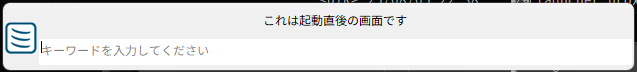
また、タスクトレイにアイコンが表示される。
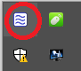
アプリを終了する
入力画面でexitコマンドを実行するか、タスクトレイから終了を選択する。
exitコマンドを実行
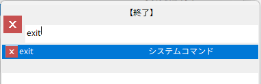
タスクトレイからの終了
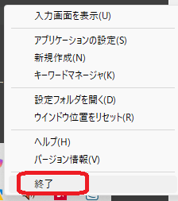
入力画面を表示する
アプリが起動している状態でランチャー呼び出しキー(デフォルト設定:Alt-Space)を押下すると、入力画面が表示される。
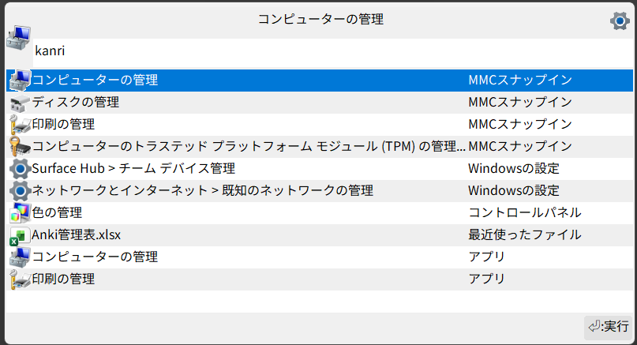
この画面でキーワードを入力し、Enterキーを押下すると、キーワードに関連付けた各種操作を実行できる。Tabキーを押すと、入力中のキーワードを補完することができる。
入力画面の各部、キー操作、パラメータ入力時に表示される追加候補については、入力画面を参照のこと。
コマンドを実行する
入力画面にキーワードを入力してEnter⏎キーを押下すると、キーワードに応じてコマンドを実行することができる。
候補が複数表示された場合は、矢印キーまたはマウスで実行したい候補を選択してからEnterキーを押します。候補が表示されない場合は、キーワードの入力内容、コマンドが有効になっているか、検索対象の設定を確認してください。
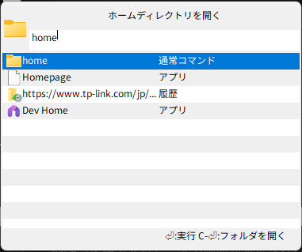
コマンドを登録する
セットアップ直後はコマンドが何も登録されていないため、
後述の方法によりコマンドを登録する必要がある。
なお、登録しなくても使える機能もある。
本アプリでは以下の方法でコマンドを登録することができる。
newコマンドで登録するregistwinコマンドで登録する対象ウインドウをDrag&Dropする
コンテキストメニューの
送る>コマンドとして登録するエクスプローラのアイコンをDrag&Dropする
各方法の詳細について後述する。
newコマンドで登録する
入力画面からnewコマンドを実行すると、コマンドの種類を選択する画面が表示される。
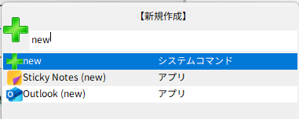
↓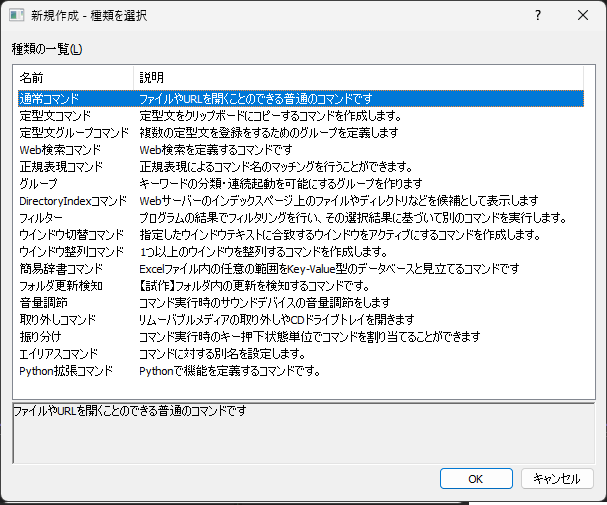
コマンド種別を選択し、OKボタンを押下すると、選択した種別に応じたコマンド編集画面が表示される。
↓※ 通常コマンドのコマンド編集画面
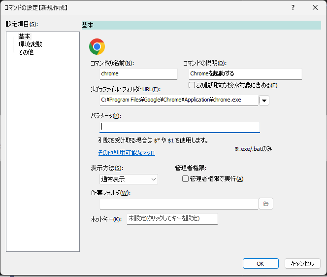
コマンド編集画面で新規登録キーワードや紐づけるプログラムへのパスなどの情報を入力し、OKを押すと、コマンドとして登録される。
例えば、メモ帳をmemoというキーワードで起動する場合は、次のように入力します。
コマンドの名前:
memo実行ファイル・URLなど:
notepad.exe
登録後に入力画面でmemoと入力してEnterキーを押すと、メモ帳が起動します。
registerwinコマンドで登録する
入力画面からregistwinコマンドを実行すると、直前にアクティブになっていたウインドウの実行プロセスを登録する画面が表示される。
↓
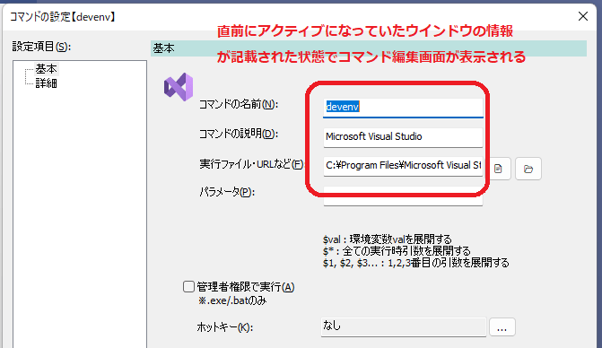
対象ウインドウをキャプチャして登録する
入力画面のアイコン欄をドラッグして、登録したいウインドウにドロップすると、そのウインドウの実行プロセスを登録する画面が表示される。
↓
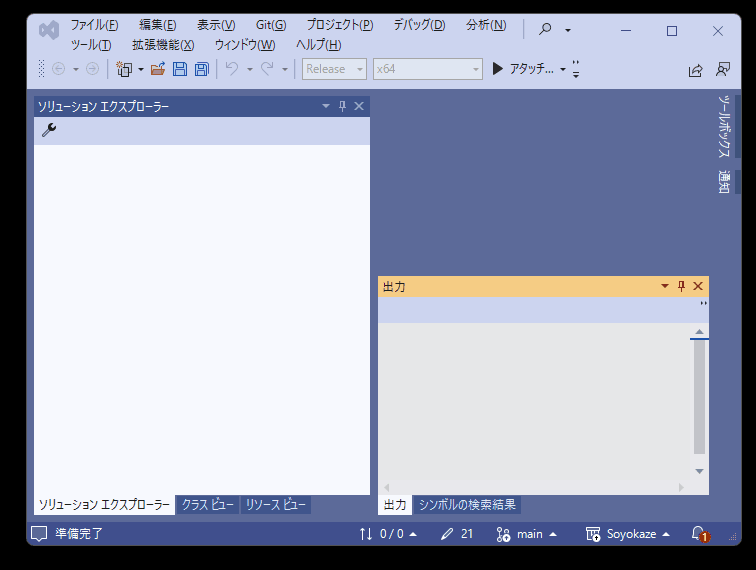
コンテキストメニューの送る>コマンドとして登録する
アプリケーション設定のショートカット設定から「送る」から登録できるようにするをチェックしている場合、エクスプローラの送るに登録用のメニュー項目が表示される。
登録したいファイルをエクスプローラ上で右クリックして、送る>コマンドとして登録するを選択すると、そのファイルを登録するためのコマンド編集画面が表示される
↓
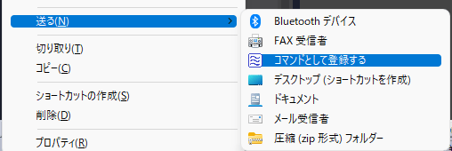
ファイルやフォルダをDrag&Dropして登録する
エクスプローラ上のファイルやフォルダのアイコンをドラッグして、入力画面上にドロップすると、 該当するファイルやフォルダをコマンドとして登録することができる。
制限事項
ランチャーが管理者権限で動作している場合に、一般権限で動作しているプロセスのアイコンをこの方法で登録することはできない。